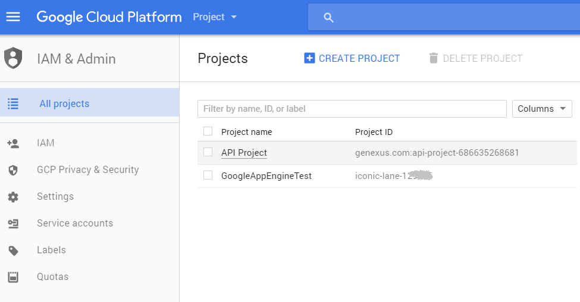
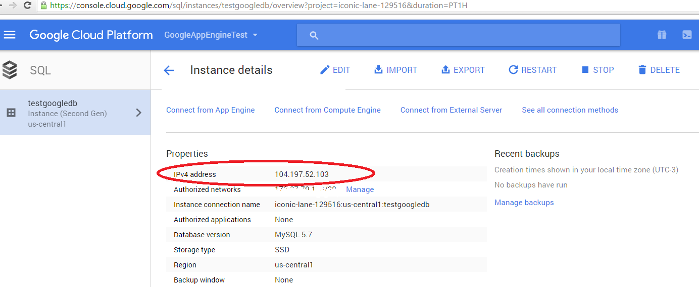

Below are the steps required to deploy a JAVA application to Google App Engine (a product of Google Cloud Platform).
First, you need to set up the environment using the Google management console. Next, from the GeneXus IDE, you will be able to create the database tables and prototype in the cloud.
To deploy the application, you can use the Deploy Applications tool.
Alternatively, some tools can be executed outside GeneXus to take the application to production manually.
The following steps are done using the console.
1. First, select or create a Cloud Platform Console project. To deploy your app to App Engine, you will need to register a project to create your project ID, which will determine the URL for the app.

2. Download & install the Google App Engine SDK.
3. Create a Mysql instance. See here for details.
4. Additionally, you will need to configure access to the instance. See Connecting from Google app engine.
In this case, you need to authorize the instance.
Note: In order to connect from the developer's PC, you have to perform some additional steps. See Connecting from an external app.
5. Once you have finished the previous steps and configured the database connection in GeneXus, you can create the database structure, and run the application from the developer's PC.
Get the connection information (the server IP) from the instance details:

Now, you are ready to deploy the app to Google App Engine. See How to deploy an application to Google App Engine.
Note:
For the time being (April/2017), Google App Engine requires JDK 1.7 to compile the application.
<appengine-web-app xmlns="http://appengine.google.com/ns/1.0"> <runtime>java8</runtime> <threadsafe>true</threadsafe> </appengine-web-app>